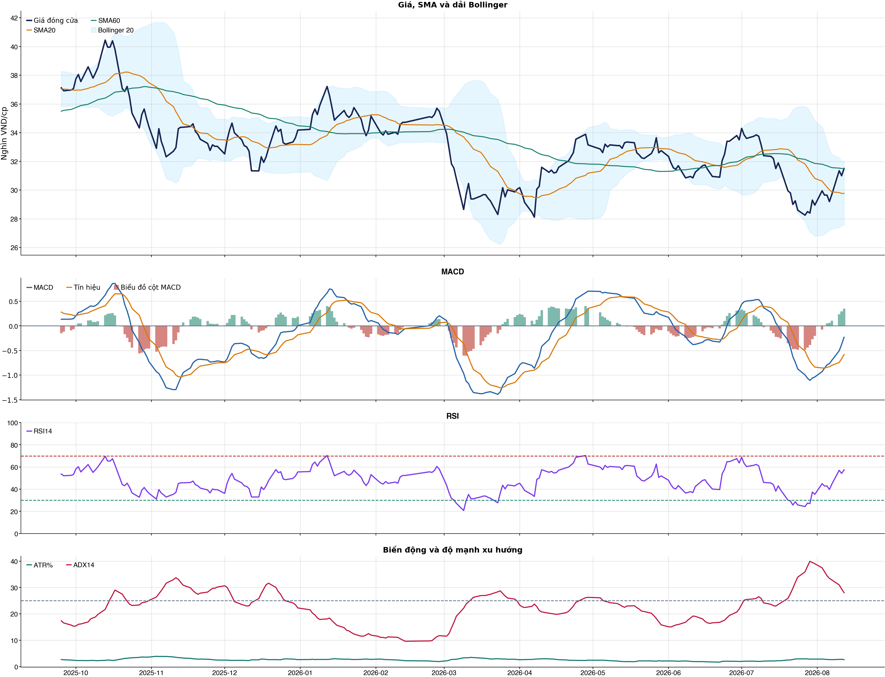
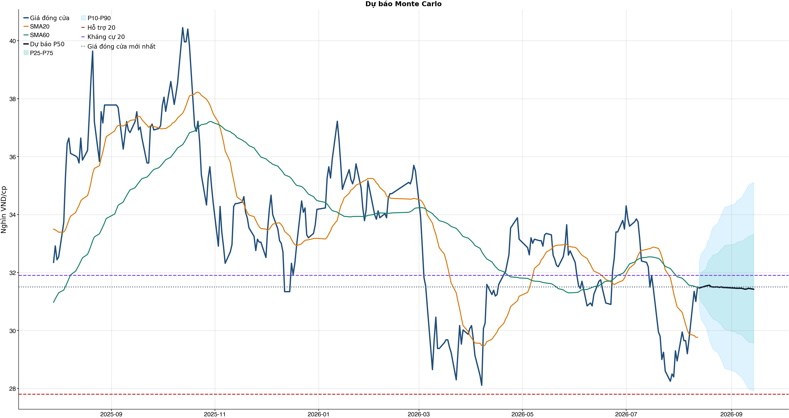
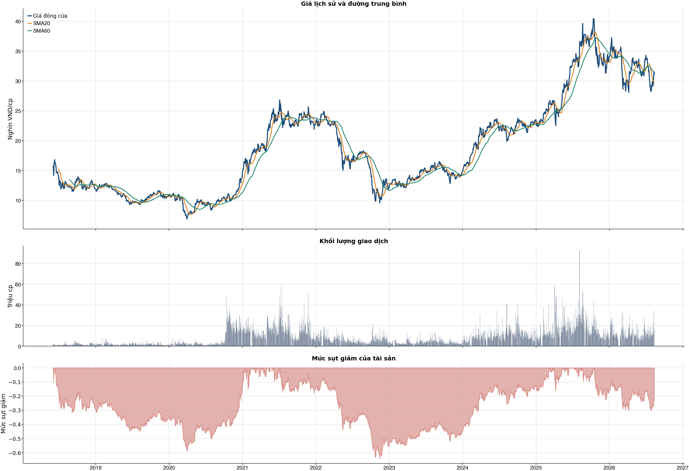

Kết quả chính
KPI đọc nhanh trước, chi tiết bấm mở bên dướiChi phí & vòng lệnh
Trọng tâm: tránh giao dịch nhiều làm phí ăn hết lợi thếKhuyến nghị hành động sau phíNO_EDGE
| Model health | BAD | Chưa tìm được ngưỡng nào có net dương và Sharpe dương sau phí trong OOS. |
| Nếu chưa có cổ phiếu | NO_EDGE | Chưa có ngưỡng sau phí đủ tốt |
| Lý do cho mua mới | Không có threshold nào trong kiểm thử OOS vừa net dương vừa Sharpe dương; không nên cố mở vị thế. | |
| Nếu đang nắm giữ | REDUCE_OR_EXIT | Model health xấu và chưa có edge sau phí; nếu đang giữ thì ưu tiên giảm tỷ trọng hoặc thoát theo kỷ luật. |
| Xác suất hiện tại | 50.9% | So với ngưỡng sau phí được chọn từ OOS. |
| Ngưỡng sau phí chọn | N/A | Chưa có threshold nào đạt net dương + Sharpe dương. |
| Baseline cấu hình | 42 vòng | Net sau phí -27.1%. |
| Reward/Risk | 7.14 | Chỉ dùng nếu decision cuối cùng cho phép mở vị thế. |
| Kỹ thuật / tin | 6 điểm | Tích cực; news warning: không; sentiment 0.00. |
Đây là lớp ra quyết định sau phí: tách riêng người chưa có cổ phiếu và người đang nắm giữ. Mua mới chỉ được xét khi model health đủ tốt, xác suất hiện tại vượt ngưỡng đã sống sót qua backtest OOS sau chi phí và các guard chính không bị phá.
Bảng chính: turnover, gross, phí và net61 / 38 / 31 / 20 / 10 / 5 / 1
| Kịch bản | Cách chọn | Vòng | Gross trước phí | Phí | Net sau phí | Sharpe | Ghi chú |
|---|---|---|---|---|---|---|---|
| Gốc | Ngưỡng gốc ≥ 0.55 | 42 | -10.3% | 20.6% | -27.1% | -1.65 | Baseline 61 vòng nếu model phát tín hiệu nhiều. |
| Ngưỡng 0.58 | Chỉ vào lệnh khi xác suất ≥ 0.58 | 18 | -4.8% | 8.8% | -12.9% | -1.14 | Tăng ngưỡng để giảm vòng lệnh. |
| Ngưỡng 0.60 | Chỉ vào lệnh khi xác suất ≥ 0.60 | 8 | -3.6% | 3.9% | -7.3% | -0.70 | Tăng ngưỡng để giảm vòng lệnh. |
| Ngưỡng 0.62 | Chỉ vào lệnh khi xác suất ≥ 0.62 | 4 | -4.2% | 2.0% | -6.1% | -0.83 | Tăng ngưỡng để giảm vòng lệnh. |
| Giới hạn 10 vòng | Tối đa 10 vòng, ưu tiên xác suất cao hơn | 10 | -5.6% | 4.9% | -10.1% | -0.94 | Ngưỡng xác suất trong nhóm: 59.2%. |
| Giới hạn 5 vòng | Tối đa 5 vòng, ưu tiên xác suất cao hơn | 5 | -5.3% | 2.4% | -7.6% | -0.98 | Ngưỡng xác suất trong nhóm: 61.2%. |
| Giới hạn 1 vòng | Tối đa 1 vòng, ưu tiên xác suất cao hơn | 1 | -2.3% | 0.5% | -2.7% | -0.59 | Ngưỡng xác suất trong nhóm: 64.7%. |
Đọc bảng này từ trái sang phải: số vòng càng ít thì phí càng thấp, nhưng kết quả sau phí vẫn chỉ là kiểm thử OOS. Các dòng 10/5/1 giới hạn số vòng bằng xác suất model cao hơn, không phải chọn lệnh thắng sau khi biết kết quả và không tự biến NO_EDGE thành BUY.
Breakdown trước phí / sau phívì sao gross dương nhưng net âm
| Kịch bản trước chi phí | -10.3% | Gross PnL -10,309,127 VND; chưa trừ commission/slippage/tax. |
| Chi phí giao dịch | -20.6% | 42 vòng; entry 20.0 bps + exit 30.0 bps = 50.0 bps/vòng; tổng phí 18,776,580 VND. |
| Kịch bản sau chi phí | -27.1% | Net PnL -27,056,580 VND; gross - cost gap khoảng +16.7%. |
| Ngưỡng phí hòa vốn | -25.1 bps/vòng | Phí hiện tại 50.0 bps/vòng; cao hơn ngưỡng này thì gross dương vẫn có thể thành net âm. |
| Kết luận hành động | CHƯA CÓ LỢI THẾ (NO_EDGE) | Không đủ lợi thế sau phí; giữ NO_EDGE. |
| Cách cải thiện cần test | Giảm turnover | Hiện có 42 phiên active/42 vòng; nên test threshold 0.58/0.60/0.62 hoặc giữ nhiều phiên hơn. |
Kiểm thử chiến lược ngoài mẫu sau chi phí42 vòng
| Lợi nhuận ròng | -27.1% | 729 quan sát ngoài mẫu |
| Sharpe | -1.65 | Sau chi phí |
| Mức sụt giảm tối đa | -27.7% | 42 vòng giao dịch |
| Chi phí giả định | 50.0 bps | Một vòng mua và bán |
So sánh mô hìnhXGBoost vs Logistic
| XGBoost | 0.486 | AUC 0.500 |
| Logistic | 0.495 | AUC 0.501 |
| Đa số | 0.500 | Mốc so sánh |
Mức độ quan trọng của đặc trưngtop feature
| volatility_20d | 13.29 | Mức đóng góp |
| bb_position_20 | 11.07 | Mức đóng góp |
| atr_pct_14 | 10.33 | Mức đóng góp |
| relative_strength_20d | 9.83 | Mức đóng góp |
| excess_return_5d | 9.70 | Mức đóng góp |
| market_return_1d | 9.18 | Mức đóng góp |
| excess_return_1d | 9.13 | Mức đóng góp |
| return_3d | 9.11 | Mức đóng góp |
Điều kiện phát hành tín hiệuCHƯA CÓ LỢI THẾ (NO_EDGE)
| AUC của mô hình | KHÔNG ĐẠT | Điều kiện phát hành tín hiệu |
| Độ chính xác cân bằng của mô hình | KHÔNG ĐẠT | Điều kiện phát hành tín hiệu |
| XGBoost vượt mô hình Logistic đối chứng | KHÔNG ĐẠT | Điều kiện phát hành tín hiệu |
| Xác suất tăng đạt ngưỡng | KHÔNG ĐẠT | Điều kiện phát hành tín hiệu |
| Bối cảnh kỹ thuật đạt ngưỡng | ĐẠT | Điều kiện phát hành tín hiệu |
| Tỷ lệ lợi nhuận/rủi ro đạt ngưỡng | ĐẠT | Điều kiện phát hành tín hiệu |
| Dữ liệu còn mới | ĐẠT | Điều kiện phát hành tín hiệu |
| Có khối lượng vị thế hợp lệ | ĐẠT | Điều kiện phát hành tín hiệu |
| Có kết quả kiểm thử chiến lược ngoài mẫu | ĐẠT | Điều kiện phát hành tín hiệu |
| Mẫu kiểm thử chiến lược đủ lớn | ĐẠT | Điều kiện phát hành tín hiệu |
| Kiểm thử chiến lược có lợi thế ròng | KHÔNG ĐẠT | Điều kiện phát hành tín hiệu |
Quản trị rủi rostop / target
| Rủi ro/lệnh | 1.0% | 1,000,000 VND |
| Mức dừng lỗ | 31.17 | Rủi ro mỗi cổ phiếu 0.48 |
| Mục tiêu 1 | 35.12 | Lợi nhuận/rủi ro 7.14 |
| Mục tiêu 2 | 35.12 | Dự báo/kháng cự |
Kỹ thuật
Biểu đồ mở sẵn, bảng tín hiệu thu gọnBiểu đồ kỹ thuật

Tín hiệu kỹ thuậtchi tiết
| Xu hướng | Trung tính | Giá trên SMA60 nhưng chưa vượt SMA20. |
| MACD | Tích cực | MACD trên signal, histogram dương. |
| RSI14 | Tích cực | RSI 57.4. |
| Bollinger | Ổn định | Giá nằm trong dải Bollinger. |
| ADX | Xu hướng tăng | ADX 28.0, +DI vượt -DI. |
| Thanh khoản | Bình thường | 1.06 lần trung bình. |
| Stochastic | Cực trị | %K 98.7, %D 94.7. |
Cơ bản & tin tức
Các bảng dài để trong nút bungPhân tích cơ bảnBCTC/tỷ số
| P/E | 8.10 | 2026-Q2 |
| P/B | 1.23 | 2026-Q2 |
| P/S | 3.81 | 2026-Q2 |
| ROE | 14.8% | 2026-Q2 |
| ROA | 2.3% | 2026-Q2 |
| Gross margin | 69.1% | 2026-Q2 |
| Net margin | 47.0% | 2026-Q2 |
| Debt/Equity | 5.74 | 2026-Q2 |
| Current ratio | 0.00 | 2026-Q2 |
| NPL | 1.1% | 2026-Q2 |
| CASA | 35.0% | 2026-Q2 |
| Dividend yield | 0.0% | 2026-Q2 |
| Market cap | 219,673.5 tỷ | 2026-Q2 |
| Revenue Growth | 17.3% | 2026-Q2 YoY |
| Profit Growth | 17.7% | 2026-Q2 YoY |
| CAPEX | -132.6 tỷ | 2026-Q2 |
| Lợi nhuận sau thuế | 7,726.6 tỷ | 2026-Q2 |
| Tổng tài sản | 1,273,076.9 tỷ | 2026-Q2 |
| Vốn chủ sở hữu | 188,997.1 tỷ | 2026-Q2 |
Tin tức doanh nghiệpresearch only
| Trạng thái | Có dữ liệu | research_only |
| Nguồn / số bài | VCI | 50 |
| Bài đủ timestamp | 50 | Chỉ các bài này mới được phép dùng point-in-time |
| Sentiment 5 ngày | 0.00 | 1.0 bài trước cutoff |
| Phương pháp | keyword_heuristic_v1 | Research only; chưa dùng làm tín hiệu mua/bán |
Dự báo
Kịch bản giá và lịch sử drawdownDự báo ngắn hạn20 phiên
| 2026-08-13 | 31.47 | P10 30.78 / P90 32.37 |
| 2026-08-14 | 31.48 | P10 30.40 / P90 32.65 |
| 2026-08-17 | 31.54 | P10 30.11 / P90 32.87 |
| 2026-08-18 | 31.55 | P10 29.91 / P90 33.10 |
| 2026-08-19 | 31.56 | P10 29.67 / P90 33.15 |
| 2026-08-20 | 31.51 | P10 29.52 / P90 33.39 |
| 2026-08-21 | 31.50 | P10 29.36 / P90 33.56 |
| 2026-08-24 | 31.50 | P10 29.23 / P90 33.71 |
Lịch giao dịch Việt Nam dùng cho forecastkhông tính T7/CN/lễ
VN stock calendar: loại Thứ Bảy/Chủ Nhật và các ngày nghỉ 2026 đã công bố; ngày làm bù Thứ Bảy không được tính là phiên giao dịch chứng khoán.
Ngày nghỉ đã loại: 2026-01-01, 2026-01-02, 2026-02-16, 2026-02-17, 2026-02-18, 2026-02-19, 2026-02-20, 2026-04-27, 2026-04-30, 2026-05-01, 2026-08-31, 2026-09-01, 2026-09-02
Nếu HOSE/HNX/UPCoM công bố nghỉ đột xuất, cần thêm ngày đó vào config `market_holidays` rồi chạy lại report.
Biểu đồ dự báo

Lịch sử giá và mức sụt giảm

Báo cáo dùng để học tập và lập kịch bản, không phải khuyến nghị mua/bán.
Phân tích AI có kiểm chứngbấm mở
Trạng thái quyết định: NO_EDGE
Tóm tắt: ML decision hiện giữ nguyên NO_EDGE. News Reader đã trích đoạn có nguồn của 4 bài để phân loại chủ đề (ket_qua_kinh_doanh: 3, co_tuc_va_hanh_dong_doanh_nghiep: 1, vi_mo: 1, nganh: 4, rui_ro: 2), nhưng các trích đoạn này không tạo bằng chứng mới cho quyết định đầu tư.
Kỹ thuật: Artifact kỹ thuật: bias Tích cực; điểm 6. Chi tiết artifact: Xu hướng: Trung tính (Giá trên SMA60 nhưng chưa vượt SMA20.); MACD: Tích cực (MACD trên signal, histogram dương.); RSI14: Tích cực (RSI 57.4.); Bollinger: Ổn định (Giá nằm trong dải Bollinger.); ADX: Xu hướng tăng (ADX 28.0, +DI vượt -DI.); Thanh khoản: Bình thường (1.06 lần trung bình.); Stochastic: Cực trị (%K 98.7, %D 94.7.)
Cơ bản: Artifact cơ bản: Techcombank; kỳ 2026-Q2; P/E 8.10; P/B 1.23; ROE 14.8%; ROA 2.3%; Debt/Equity 5.74; Revenue Growth 17.3%; Profit Growth 17.7%.
Tin tức: Đã đọc trích đoạn giới hạn của 4 bài; phân nhóm rule-based: ket_qua_kinh_doanh: 3, co_tuc_va_hanh_dong_doanh_nghiep: 1, vi_mo: 1, nganh: 4, rui_ro: 2. Tác động cần kiểm chứng: Đối chiếu doanh thu/lợi nhuận trong bài với BCTC và kỳ vọng thị trường. Kiểm tra ngày GDKHQ, tỷ lệ, nguồn chi trả và nguy cơ pha loãng trước khi đánh giá tác động. Đối chiếu thời điểm công bố và kênh tác động lãi suất/tỷ giá với mô hình kinh doanh. So sánh tín hiệu ngành với thị phần, nhu cầu và đối thủ trước khi suy luận cho riêng doanh nghiệp. Xác minh công bố chính thức, phạm vi ảnh hưởng và khả năng định lượng rủi ro. Đây không phải sentiment hay dự báo tác động giá.
Live research: Live snapshot lấy lúc 2026-08-12T17:23:53.918297+00:00; News Reader đọc được 4 bài. ML có 5 lý do guard và vẫn là NO_EDGE. Không dùng tin live để train/backtest.
Rủi ro cần kiểm chứng
- ML guard: AUC 0.500 < 0.540
- ML guard: Balanced accuracy 0.486 < 0.520
- ML guard: XGBoost chưa vượt logistic baseline: AUC XGBoost=0.4998236331569665, AUC logistic=0.50100452419293
- ML guard: Probability 50.9% < 55.0%
- ML guard: Lợi thế OOS ròng không đạt: return=-0.2705657999999995, Sharpe=-1.6457936868409828
- News Reader: Đối chiếu doanh thu/lợi nhuận trong bài với BCTC và kỳ vọng thị trường.
- News Reader: Kiểm tra ngày GDKHQ, tỷ lệ, nguồn chi trả và nguy cơ pha loãng trước khi đánh giá tác động.
- News Reader: Đối chiếu thời điểm công bố và kênh tác động lãi suất/tỷ giá với mô hình kinh doanh.
- News Reader: So sánh tín hiệu ngành với thị phần, nhu cầu và đối thủ trước khi suy luận cho riêng doanh nghiệp.
- News Reader: Xác minh công bố chính thức, phạm vi ảnh hưởng và khả năng định lượng rủi ro.
- Chỉ lưu trích đoạn giới hạn để kiểm chứng nguồn; không lưu hay hiển thị toàn văn bài báo.
- Phân nhóm là keyword rule-based để định tuyến research, không phải sentiment hay dự báo tác động giá.
- Dữ liệu News Reader chỉ phục vụ research/report; không dùng làm feature train/backtest khi chưa có lịch sử available_at point-in-time.
- Tin live/trích đoạn cần mở URL gốc để kiểm chứng bối cảnh, số liệu và thời điểm trước khi sử dụng.
Bằng chứng
- ML decision artifact: NO_EDGE. AUC 0.500 < 0.540
- ML decision artifact: NO_EDGE. Balanced accuracy 0.486 < 0.520
- ML decision artifact: NO_EDGE. XGBoost chưa vượt logistic baseline: AUC XGBoost=0.4998236331569665, AUC logistic=0.50100452419293
- ML decision artifact: NO_EDGE. Probability 50.9% < 55.0%
- ML decision artifact: NO_EDGE. Lợi thế OOS ròng không đạt: return=-0.2705657999999995, Sharpe=-1.6457936868409828
- News Reader [Tuổi Trẻ]: Tự doanh chứng khoán mua ròng hàng trăm tỉ đồng, cổ phiếu TCB áp sát kỷ lục lịch sử - Tuổi Trẻ | nhóm: nganh (2026-08-10T12:16:00+00:00)
- News Reader [VietnamFinance]: TCB cùng nhóm cổ phiếu doanh nghiệp Nhà nước 'kéo' VN-Index tăng gần 9 điểm - VietnamFinance | nhóm: ket_qua_kinh_doanh, co_tuc_va_hanh_dong_doanh_nghiep, nganh, rui_ro (2026-08-10T09:22:36+00:00)
- News Reader [nguoiquansat.vn]: Cổ phiếu TCB bứt phá, nhóm ngân hàng đồng loạt tăng - nguoiquansat.vn | nhóm: ket_qua_kinh_doanh, nganh (2026-08-10T09:11:01+00:00)
- News Reader [nguoiquansat.vn]: Cổ phiếu đáng chú ý ngày 11/8: TCB, GAS, VGC - nguoiquansat.vn | nhóm: ket_qua_kinh_doanh, vi_mo, nganh, rui_ro (2026-08-10T16:09:01+00:00)
Báo cáo chỉ tổng hợp artifact đã lưu để nghiên cứu; không phải khuyến nghị mua/bán. Quyết định và vị thế vẫn bị khóa theo signal_decision.json.
Tác động của tin lên model
Trạng thái: research_only · Áp vào signal chính: not_applied
Khuyến nghị hệ thống: Chỉ hiển thị như shadow/research, chưa thay signal chính.
Gate chưa đạt: min_articles_60, min_feature_rows_30, news_feature_gain_positive, auc_at_least_0_55, balanced_accuracy_at_least_0_52
News feature importance
| Feature tin | Gain |
|---|---|
| news_count_lookback | 0.000 |
| news_sentiment_mean_lookback | 0.000 |
| news_positive_count_lookback | 0.000 |
| news_negative_count_lookback | 0.000 |
| news_earnings_count_lookback | 0.000 |
| news_corporate_action_count_lookback | 0.000 |
| news_legal_count_lookback | 0.000 |
| news_source_count_lookback | 0.000 |
Điều kiện bật news vào signal chính
| Gate | Kết quả |
|---|---|
| min_articles_60 | Chưa đạt |
| min_feature_rows_30 | Chưa đạt |
| news_feature_gain_positive | Chưa đạt |
| auc_at_least_0_55 | Chưa đạt |
| balanced_accuracy_at_least_0_52 | Chưa đạt |
CSV dựng từ live snapshots chỉ phù hợp smoke test/research; cần lịch sử available_at dài hơn trước khi dùng production.
Tin web đã lấyheadline + nguồn
| Nguồn | Tiêu đề | Thời điểm | Link |
|---|---|---|---|
| Việt Báo | Cổ phiếu TCB còn dư địa? - Việt Báo | 2026-08-12T11:45:11+00:00 | Mở nguồn |
| Tuổi Trẻ | Tự doanh chứng khoán mua ròng hàng trăm tỉ đồng, cổ phiếu TCB áp sát kỷ lục lịch sử - Tuổi Trẻ | 2026-08-10T12:16:00+00:00 | Mở nguồn |
| VietnamFinance | TCB cùng nhóm cổ phiếu doanh nghiệp Nhà nước 'kéo' VN-Index tăng gần 9 điểm - VietnamFinance | 2026-08-10T09:22:36+00:00 | Mở nguồn |
| nguoiquansat.vn | Cổ phiếu TCB bứt phá, nhóm ngân hàng đồng loạt tăng - nguoiquansat.vn | 2026-08-10T09:11:01+00:00 | Mở nguồn |
| nguoiquansat.vn | Cổ phiếu đáng chú ý ngày 11/8: TCB, GAS, VGC - nguoiquansat.vn | 2026-08-10T16:09:01+00:00 | Mở nguồn |
| CÔNG TY CỔ PHẦN CHỨNG KHOÁN CV | Ba cổ phiếu nào được tự doanh xuống tiền mạnh nhất? - CÔNG TY CỔ PHẦN CHỨNG KHOÁN CV | 2026-08-11T12:30:20+00:00 | Mở nguồn |
News Reader: bài đã đọc và trích đoạnbấm mở trích đoạn
| Nguồn | Tiêu đề | Nhóm | Thời điểm | Trích đoạn đã đọc | Link |
|---|---|---|---|---|---|
| Tuổi Trẻ | Tự doanh chứng khoán mua ròng hàng trăm tỉ đồng, cổ phiếu TCB áp sát kỷ lục lịch sử - Tuổi Trẻ | nganh | 2026-08-10T12:16:00+00:00 | Xem trích đoạnDu lịch Cơ hội du lịch Đi chơi Mách bạn Quê hương Bạn đọc Phản hồi Đường dây nóng Tiêu điểm Chia sẻ Tự doanh công ty chứng khoán mua ròng hàng trăm tỉ đồng phiên 10-8-2026 khi thị trường khởi sắc. Tự doanh công ty chứng khoán đẩy mạnh mua ròng trong phiên thị trường tăng điểm - Ảnh: HỮU HẠNH Số liệu từ HoSE cho biết phiên giao dịch ngày 10-8 khối tự doanh các công ty chứng khoán mua ròng 309 tỉ đồng. Đây là mức cao thứ hai trong 8 phiên gần nhất, chỉ sau phiên 3-8 (540 tỉ đồng), tổng giá trị mua vào đạt 980 tỉ đồng, bán ra 671 tỉ đồng. Nếu chỉ tính giao dịch khớp lệnh, khối tự doanh mua ròng tới 490 tỉ đồng. Sự chênh lệch giữa khớp lệnh và số tổng đến từ giao dịch thỏa thuận bán 176 tỉ đồng tại DMX. Mã này không phát sinh giao dịch khớp lệnh trong phiên. Ở chiều mua ròng, TCB dẫn đầu với 121 tỉ đồng, trong đó mua vào 186,1 tỉ đồng và bán ra 65,1 tỉ đồng. Con số nêu trên đánh dấu mức mua ròng cao thứ hai trong lịch sử giao dịch tự doanh của mã này, chỉ thấp hơn kỷ lục 126 tỉ đồng lập ngày 20-6-2024 chưa đầy 5 tỉ đồng. Đáng chú ý, trong 20 phiên trước khi mua ròng hôm nay, khối tự doanh bán ròng bình quân 3,5 tỉ đồng/phiên ở mã này. TCB được tự doanh mua ròng lớn thứ 2 lịch sử - Ảnh: QUÂN NGUYỄN MWG đứng thứ hai với 100 tỉ đồng mua ròng, gấp hơn 13 lần mức bình quân 20 phiên gần nhất (khoảng 7,5 tỉ đồng). VPB, CTG, HPG, FPT và VIC cũng nằm trong nhóm mua ròng trên 25 tỉ đồng. Về phía bán ròng, GMD bị bán ròng mạnh nhất với 24,5 tỉ đồng, theo sau là VNM (14,4 tỉ đồng), GEL (10,8 tỉ đồng) và MSB (7,5 tỉ đồng). TCB và MWG hút dòng tiền của khối tự doanh, trong khi DMX tiếp tục có lệnh bán thỏa thuận lớn - Ảnh: QUÂN NGUYỄN Phiên giao dịch ngày 10-8 ghi nhận BSR và BID cùng đứt chuỗi bán ròng. Tự doanh sau khi bán ròng BSR 8 phiên liền đã quay lại mua ròng 1,8 tỉ đồng, đồng thời mua ròng 1,1 tỉ đồng tại BID sau chuỗi 5 phiên bán ròng. VGC đang được tự doanh mua ròng liên tục 12 phiên tính đến hôm nay, trong khi đó FRT lại bị bán ròng cũng đúng 12 phiên liên tiếp. Cả hai đều ghi nhận chuỗi dài nhất tính đến thời điểm hiện tại nhưng theo hai hướng đối lập nhau. VN-Index đóng cửa phiên 10-8 ở 1.776,77 điểm, tăng 8,71 điểm (0,49%) so với đóng cửa phiên 7-8. PNJ nối dài chuỗi tăng trần lên ba phiên liên tiếp, khối ngoại tiếp tục mua ròng mạnh, trái ngược với động thái bán ròng gần 1.200 tỉ đồng của khối tự doanh. Đã có lỗi xảy ra, mời bạn quay lại bài viết và thực hiện | Mở nguồn |
| VietnamFinance | TCB cùng nhóm cổ phiếu doanh nghiệp Nhà nước 'kéo' VN-Index tăng gần 9 điểm - VietnamFinance | ket_qua_kinh_doanh, co_tuc_va_hanh_dong_doanh_nghiep, nganh, rui_ro | 2026-08-10T09:22:36+00:00 | Xem trích đoạn(VNF) - Bất chấp khối ngoại bán ròng, TCB vẫn tăng 5,56%, cùng nhóm cổ phiếu vốn Nhà nước nâng đỡ VN-Index trong bối cảnh VIC và VHM đồng loạt giảm mạnh. Thị trường chứng khoán khởi đầu tuần mới trong trạng thái giằng co khi áp lực bán khiến VN-Index có thời điểm lùi về 1.759 điểm trong phiên sáng. Tuy nhiên, lực cầu nhanh chóng nhập cuộc, giúp chỉ số đảo chiều và từng bước hồi phục lên vùng 1.780 điểm vào giữa phiên. Dù vẫn chịu sức ép từ một số cổ phiếu vốn hóa lớn, đặc biệt là nhóm bất động sản, VN-Index duy trì được sắc xanh cho đến cuối phiên. Kết phiên, VN-Index tăng 8,71 điểm, tương đương 0,49%, lên 1.776,77 điểm. HNX-Index lại đi ngược xu hướng khi giảm 5,76 điểm (-1,96%) xuống 287,68 điểm, trong khi UPCoM-Index tăng 0,44 điểm (+0,35%) lên 127,32 điểm. Thanh khoản toàn thị trường đạt khoảng 18.780 tỷ đồng, tương ứng 798,83 triệu cổ phiếu được giao dịch. Riêng trên HoSE, độ rộng nghiêng về phía tăng với 469 mã tăng, 226 mã giảm và 819 mã đứng giá. Toàn thị trường ghi nhận 28 mã tăng trần và 7 mã giảm sàn. Diễn biến này cho thấy đà hồi phục không chỉ đến từ một vài cổ phiếu vốn hóa lớn mà có sự tham gia tương đối rộng của dòng tiền. Đáng chú ý, nhóm cổ phiếu doanh nghiệp có vốn Nhà nước tiếp tục là một trong những tâm điểm của phiên giao dịch. Dòng tiền tìm đến nhóm này trong bối cảnh thị trường đang quan tâm tới Quyết định 40/2026/QĐ-TTg về tiêu chí phân loại doanh nghiệp để thực hiện cơ cấu lại vốn Nhà nước, được ban hành ngày 5/8. GAS tăng 6,97%, GVR tăng 6,89%, trong khi BSR tăng 2,67%, PLX tăng 4,31%, PVT tăng 5,72% và POW tăng 1,84%. Nhóm ngân hàng có vốn Nhà nước cũng đồng loạt tăng, với VCB tăng 1,01%, BID tăng 1,15% và CTG tăng 0,92%. Sự khởi sắc của nhóm này có ý nghĩa đáng kể đối với diễn biến chỉ số. Trong đó, GAS là cổ phiếu đóng góp tích cực nhất cho VN-Index với khoảng 2,6 điểm, còn GVR góp 1,7 điểm. Ở chiều ngược lại, đà tăng của thị trường bị triệt tiêu đáng kể bởi áp lực từ nhóm cổ phiếu họ Vingroup. VIC giảm 3,02%, lấy đi tới 10,6 điểm khỏi VN-Index, trong khi VHM giảm 1,92%, khiến chỉ số mất thêm khoảng 2,43 điểm. VPL giảm 0,8%, còn LPB và một số mã khác cũng tạo áp lực lên thị trường. Việc VN-Index vẫn tăng gần 9 điểm bất chấp lực kéo giảm mạnh từ VIC và VHM cho thấy dòng tiền tại các nhóm cổ phiếu dẫn dắt đã đủ sức cân bằng áp lực bán ở phía đối diện. Trong bức tranh đó, nhóm ngân hàng nổi lên như một trong những động lực quan | Mở nguồn |
| nguoiquansat.vn | Cổ phiếu TCB bứt phá, nhóm ngân hàng đồng loạt tăng - nguoiquansat.vn | ket_qua_kinh_doanh, nganh | 2026-08-10T09:11:01+00:00 | Xem trích đoạnCổ phiếu TCB tăng 5,56% lên 31.350 đồng trong phiên 10/8, trong khi nhiều mã ngân hàng khác cũng đồng loạt tăng giá. Cổ phiếu ngân hàng đồng loạt tăng, TCB nổi bật VN-Index đóng cửa phiên 10/8 tại 1.776,77 điểm, tăng 8,71 điểm, tương đương 0,49% so với phiên trước. Trong phiên, chỉ số dao động trong biên độ 1.759,06-1.785,38 điểm. Thanh khoản thị trường duy trì ở mức cao, với hơn 730 triệu cổ phiếu được giao dịch, tương ứng tổng giá trị 17.725 tỷ đồng. Độ rộng thị trường nghiêng về bên mua khi có 245 mã tăng giá, trong khi 88 mã giảm và 47 mã đứng giá. Nhóm ngân hàng nổi bật với TCB dẫn dắt đà tăng. Cổ phiếu TCB đóng cửa tại 31.350 đồng/cổ phiếu, tăng 1.650 đồng, tương đương 5,56%, đồng thời cũng là mức giá cao nhất trong phiên. Thanh khoản TCB đạt 34,81 triệu cổ phiếu, tương ứng giá trị giao dịch 1.063 tỷ đồng. Khối lượng giao dịch cao khoảng 2,7 lần mức bình quân 10 phiên, ở 12,9 triệu cổ phiếu. SHB tăng 2,56% lên 12.000 đồng/cổ phiếu, dẫn đầu nhóm ngân hàng về khối lượng giao dịch với 78,43 triệu cổ phiếu. VPB tăng 3,40% lên 25.850 đồng/cổ phiếu, với 17,88 triệu cổ phiếu được giao dịch, tương ứng giá trị 457,64 tỷ đồng. Trong khi đó, MBB tăng 0,41% lên 24.250 đồng/cổ phiếu. Khối lượng giao dịch đạt 28,45 triệu cổ phiếu, tương ứng giá trị 690 tỷ đồng. Các cổ phiếu TPB, ACB, HDB, CTG và VIB lần lượt tăng 1,03%, 1,12%, 1,51%, 0,92% và 1,37%. MSB tăng nhẹ 0,31% lên 16.250 đồng/cổ phiếu. Như vậy, TCB là cổ phiếu tăng mạnh nhất trong nhóm được thống kê, trong khi SHB dẫn đầu về thanh khoản. Mức tăng 5,56% của TCB cũng cao hơn đáng kể mức tăng 0,49% của VN-Index. Lợi nhuận quý II của nhiều ngân hàng tăng mạnh Kết quả kinh doanh quý II/2026 cho thấy nhiều ngân hàng ghi nhận mức tăng trưởng lợi nhuận cao. Top 10 ngân hàng có lợi nhuận trước thuế cao nhất gồm Vietcombank, VietinBank, VPBank, MB, BIDV, Techcombank, HDBank, ACB, SHB và LPBank. Tổng lợi nhuận trước thuế của nhóm đạt khoảng 93.700 tỷ đồng, chiếm 84% lợi nhuận toàn khối ngân hàng niêm yết. Vietcombank dẫn đầu với lợi nhuận trước thuế quý II đạt 17.420 tỷ đồng, tăng 57,9% so với cùng kỳ. Thu nhập lãi thuần tăng 35,2%, đạt hơn 19.100 tỷ đồng, trong khi chi phí dự phòng rủi ro tín dụng giảm gần 38%. VPBank ghi nhận lợi nhuận trước thuế 10.929 tỷ đồng, tăng 76% và là mức cao nhất theo quý trong lịch sử hoạt động. Kết quả được hỗ trợ bởi tăng trưởng tại ngân hàng mẹ và sự cải thiện hoạt động tại các công ty | Mở nguồn |
| nguoiquansat.vn | Cổ phiếu đáng chú ý ngày 11/8: TCB, GAS, VGC - nguoiquansat.vn | ket_qua_kinh_doanh, vi_mo, nganh, rui_ro | 2026-08-10T16:09:01+00:00 | Xem trích đoạnCông ty chứng khoán phân tích và đưa ra nhận định mua/bán đối với các cổ phiếu TCB, GAS và VGC. Techcombank (TCB): Khuyến nghị mua, giá mục tiêu 33.000 đồng/cp Kết phiên 10/8, cổ phiếu Techcombank (HoSE: TCB ) tăng 5,56% lên 31.350 đồng/cp. Thanh khoản đạt 34,81 triệu đơn vị, tương ứng giá trị giao dịch 1.063 tỷ đồng, cao khoảng 2,7 lần mức bình quân 10 phiên gần nhất. Trong báo cáo cập nhật ngày 28/7, Chứng khoán Agribank (Agriseco, HoSE: AGR) khuyến nghị Tăng tỷ trọng đối với cổ phiếu TCB với giá mục tiêu 33.000 đồng/cp, với tiềm năng tăng giá khoảng 5,3% so với mức giá hiện tại. Quý II/2026, Techcombank ghi nhận lợi nhuận trước thuế 9.670 tỷ đồng, tăng 22% so với cùng kỳ. Lũy kế 6 tháng, lợi nhuận trước thuế đạt 18.540 tỷ đồng, cũng tăng 22%, nhờ thu nhập lãi thuần và thu nhập ngoài lãi cải thiện trong khi chi phí dự phòng giảm. Riêng thu nhập từ hoạt động dịch vụ tăng 38%, được hỗ trợ bởi phí thanh toán, thư tín dụng và bảo hiểm. Biên lãi ròng (NIM) quý II cải thiện lên 3,4% nhờ tối ưu hóa danh mục tín dụng và các tài sản sinh lời cao, trong khi NIM trượt 12 tháng duy trì ở mức 3,6%. Chi phí dự phòng 6 tháng giảm 25% xuống 1.587 tỷ đồng, qua đó hỗ trợ đáng kể cho tăng trưởng lợi nhuận. Agriseco cũng đánh giá tích cực tốc độ mở rộng tín dụng của Techcombank. Tính đến cuối tháng 6/2026, tín dụng riêng lẻ tăng 11,6% so với đầu năm; nếu tính thêm các khoản cho vay hạ tầng và nhà ở xã hội ngoài hạn mức, mức tăng đạt 14,3%, cao hơn mức 7,7% của toàn hệ thống. Động lực tăng trưởng chủ yếu đến từ khách hàng doanh nghiệp, đặc biệt lĩnh vực xây dựng, cùng phân khúc khách hàng cá nhân và SME. Đáng chú ý, ngân hàng tiếp tục điều chỉnh cơ cấu tín dụng theo hướng giảm phụ thuộc vào bất động sản, với tỷ trọng cho vay lĩnh vực này giảm từ 28,6% xuống 26,68%. Agriseco kỳ vọng tín dụng TCB cả năm 2026 tăng khoảng 15-18%, tập trung vào cho vay tín chấp và các dự án hạ tầng. Chất lượng tài sản được duy trì ở mức tích cực khi tỷ lệ nợ xấu (NPL) cuối quý II ở mức 1,15%, trong khi tỷ lệ bao phủ nợ xấu đạt 126%. Tỷ lệ cho vay trên tiền gửi (LDR) ở mức 80,1% và hệ số an toàn vốn (CAR) đạt 15%. Trên cơ sở đó, Agriseco kỳ vọng lợi nhuận Techcombank năm 2026 tiếp tục tăng trưởng trên 15%, được hỗ trợ bởi tăng trưởng tín dụng cao, tỷ lệ CASA thuộc nhóm dẫn đầu và chất lượng tài sản tích cực. Tại thời điểm lập báo cáo, TCB giao dịch ở mức P/B khoảng 1,1 lần, thấp hơn mức bình quân | Mở nguồn |
Chi tiết báo cáo tài chínhbảng dài
Kết quả kinh doanh — 4 kỳ gần nhất
Hiển thị 35 dòng đầu; mở CSV đầy đủ.
| Khoản mục | 2026-Q2 | 2026-Q1 | 2025-Q4 | 2025-Q3 |
|---|---|---|---|---|
| Tổng lợi nhuận/lỗ trước thuế | 9,670.0 tỷ | 8,870.0 tỷ | 9,153.2 tỷ | 8,250.0 tỷ |
| Chi phí thuế TNDN hiện hành | -1,948.1 tỷ | -1,920.4 tỷ | -2,136.1 tỷ | -1,636.6 tỷ |
| Chi phí thuế TNDN hoãn lại | 4.7 tỷ | 0.7 tỷ | -37.3 tỷ | 0.1 tỷ |
| Chi phí thuế thu nhập doanh nghiệp | -1,943.4 tỷ | -1,919.7 tỷ | -2,173.4 tỷ | -1,636.5 tỷ |
| Lợi nhuận sau thuế | 7,726.6 tỷ | 6,950.3 tỷ | 6,979.8 tỷ | 6,613.5 tỷ |
| Lợi ích của cổ đông thiểu số | -376.6 tỷ | -279.2 tỷ | -304.3 tỷ | -194.2 tỷ |
| Cổ đông của Công ty mẹ | 7,350.1 tỷ | 6,671.1 tỷ | 6,675.6 tỷ | 6,419.3 tỷ |
| Lãi cơ bản trên cổ phiếu (VND) | 0.0 tỷ | 0.0 tỷ | 0.0 tỷ | 0.0 tỷ |
| Lãi trên cổ phiếu pha loãng (VND) | 0.0 tỷ | 0.0 tỷ | 0.0 tỷ | 0.0 tỷ |
| Thu nhập lãi và các khoản thu nhập tương tự | 22,861.3 tỷ | 19,697.0 tỷ | 19,164.2 tỷ | 17,599.6 tỷ |
| Chi phí lãi và các chi phí tương tự | -12,098.3 tỷ | -10,175.0 tỷ | -8,376.3 tỷ | -7,674.9 tỷ |
| Thu nhập lãi thuần | 10,763.0 tỷ | 9,522.1 tỷ | 10,788.0 tỷ | 9,924.6 tỷ |
| Thu nhập từ dịch vụ | 5,004.4 tỷ | 4,293.0 tỷ | 3,619.8 tỷ | 3,276.2 tỷ |
| Chi phí dịch vụ | -1,342.2 tỷ | -1,144.5 tỷ | -1,048.8 tỷ | -1,010.3 tỷ |
| Lãi/Lỗ thuần từ hoạt động dịch vụ | 3,662.2 tỷ | 3,148.5 tỷ | 2,570.9 tỷ | 2,265.9 tỷ |
| Lãi/(lỗ) thuần từ hoạt động kinh doanh ngoại hối và vàng | -68.5 tỷ | 583.8 tỷ | 212.8 tỷ | 559.4 tỷ |
| Lãi/(lỗ) thuần từ mua bán chứng khoán kinh doanh | 28.5 tỷ | 42.8 tỷ | -8.6 tỷ | -149.8 tỷ |
| Lãi/(lỗ) thuần từ mua bán chứng khoán đầu tư | 81.8 tỷ | 238.7 tỷ | 736.6 tỷ | 1,059.4 tỷ |
| Thu nhập khác | 2,105.3 tỷ | 989.7 tỷ | 1,250.4 tỷ | 1,704.0 tỷ |
| Chi phí khác | -1,635.3 tỷ | -851.2 tỷ | -756.7 tỷ | -1,127.8 tỷ |
| Lãi/(lỗ) thuần từ hoạt động khác | 469.9 tỷ | 138.5 tỷ | 493.7 tỷ | 576.2 tỷ |
| Thu nhập từ cổ tức | 4.9 tỷ | -0.1 tỷ | 1.3 tỷ | 6.3 tỷ |
| Tổng thu nhập hoạt động | 14,941.8 tỷ | 13,674.3 tỷ | 14,794.8 tỷ | 14,242.1 tỷ |
| Chi phí quản lý doanh nghiệp | -4,620.1 tỷ | -3,869.0 tỷ | -4,824.0 tỷ | -4,492.9 tỷ |
| Lợi nhuận thuần hoạt động trước khi trích lập dự phòng tổn thất tín dụng | 10,321.7 tỷ | 9,805.3 tỷ | 9,970.8 tỷ | 9,749.3 tỷ |
| Trích lập dự phòng tổn thất tín dụng | -651.6 tỷ | -935.3 tỷ | -817.6 tỷ | -1,499.3 tỷ |
Bảng cân đối kế toán — 4 kỳ gần nhất
Hiển thị 35 dòng đầu; mở CSV đầy đủ.
| Khoản mục | 2026-Q2 | 2026-Q1 | 2025-Q4 | 2025-Q3 |
|---|---|---|---|---|
| Tiền mặt, vàng bạc, đá quý | 3,909.4 tỷ | 5,467.7 tỷ | 4,360.8 tỷ | 4,045.7 tỷ |
| Tài sản cố định | 12,324.8 tỷ | 11,585.8 tỷ | 12,122.9 tỷ | 12,043.5 tỷ |
| Tài sản cố định hữu hình | 6,185.7 tỷ | 6,118.6 tỷ | 6,343.7 tỷ | 6,099.9 tỷ |
| Nguyên giá TSCĐ hữu hình | 9,703.0 tỷ | 9,480.1 tỷ | 9,539.3 tỷ | 9,119.4 tỷ |
| Hao mòn TSCĐ hữu hình | -3,517.2 tỷ | -3,361.5 tỷ | -3,195.5 tỷ | -3,019.6 tỷ |
| Tài sản cố định thuê tài chính | 0.0 tỷ | 0.0 tỷ | 0.0 tỷ | 0.0 tỷ |
| Nguyên giá TSCĐ thuê tài chính | 0.0 tỷ | 0.0 tỷ | 0.0 tỷ | 0.0 tỷ |
| Hao mòn TSCĐ thuê tài chính | 0.0 tỷ | 0.0 tỷ | 0.0 tỷ | 0.0 tỷ |
| Tài sản cố định vô hình | 6,139.0 tỷ | 5,467.2 tỷ | 5,779.2 tỷ | 5,943.7 tỷ |
| Nguyên giá TSCĐ vô hình | 10,546.2 tỷ | 9,535.7 tỷ | 9,536.0 tỷ | 9,378.2 tỷ |
| Hao mòn TSCĐ vô hình | -4,407.2 tỷ | -4,068.5 tỷ | -3,756.8 tỷ | -3,434.6 tỷ |
| Bất động sản đầu tư | 0.0 tỷ | 0.0 tỷ | 0.0 tỷ | 0.0 tỷ |
| Nguyên giá bất động sản đầu tư | 0.0 tỷ | 0.0 tỷ | 0.0 tỷ | 0.0 tỷ |
| Hao mòn bất động sản đầu tư | 0.0 tỷ | 0.0 tỷ | 0.0 tỷ | 0.0 tỷ |
| Góp vốn, đầu tư dài hạn | 3,076.8 tỷ | 3,244.3 tỷ | 3,246.6 tỷ | 3,090.6 tỷ |
| Đầu tư vào công ty con | 0.0 tỷ | 0.0 tỷ | 0.0 tỷ | 0.0 tỷ |
| Đầu tư vào công ty liên doanh | 27.4 tỷ | 30.0 tỷ | 32.3 tỷ | 32.8 tỷ |
| Đầu tư dài hạn khác | 3,050.5 tỷ | 3,215.5 tỷ | 3,215.5 tỷ | 3,059.0 tỷ |
| Dự phòng giảm giá đầu tư dài hạn | -1.1 tỷ | -1.1 tỷ | -1.1 tỷ | -1.1 tỷ |
| TỔNG TÀI SẢN | 1,273,076.9 tỷ | 1,190,453.8 tỷ | 1,192,344.1 tỷ | 1,129,570.5 tỷ |
| TỔNG NỢ PHẢI TRẢ | 1,084,079.8 tỷ | 1,003,771.0 tỷ | 1,012,842.7 tỷ | 950,139.9 tỷ |
| VỐN CHỦ SỞ HỮU | 188,997.1 tỷ | 186,682.8 tỷ | 179,501.4 tỷ | 179,430.6 tỷ |
| Vốn điều lệ | 70,862.4 tỷ | 70,862.4 tỷ | 70,862.4 tỷ | 70,648.5 tỷ |
| Thặng dư vốn cổ phần | -0.1 tỷ | -0.1 tỷ | -0.1 tỷ | -0.1 tỷ |
| Vốn khác | 11,462.0 tỷ | 7,946.5 tỷ | 7,764.1 tỷ | 7,764.1 tỷ |
| Cổ phiếu Quỹ | 0.0 tỷ | 0.0 tỷ | 0.0 tỷ | 0.0 tỷ |
| Chênh lệch đánh giá lại tài sản | 0.0 tỷ | 0.0 tỷ | 0.0 tỷ | 0.0 tỷ |
| Chênh lệch tỷ giá hối đoái | 0.0 tỷ | 0.0 tỷ | 0.0 tỷ | 0.0 tỷ |
| Lợi nhuận chưa phân phối | 68,178.3 tỷ | 69,435.1 tỷ | 62,773.6 tỷ | 60,834.0 tỷ |
| Lợi ích của cổ đông thiểu số (trước 2015) | 0.0 tỷ | 0.0 tỷ | 0.0 tỷ | 0.0 tỷ |
| NỢ PHẢI TRẢ VÀ VỐN CHỦ SỞ HỮU | 1,273,076.9 tỷ | 1,190,453.8 tỷ | 1,192,344.1 tỷ | 1,129,570.5 tỷ |
| Tiền gửi tại Ngân hàng nhà nước Việt Nam | 95,128.0 tỷ | 93,007.4 tỷ | 82,162.8 tỷ | 77,586.5 tỷ |
| Tiền gửi tại các TCTD khác và cho vay các TCTD khác | 85,416.5 tỷ | 87,777.3 tỷ | 114,958.3 tỷ | 92,999.1 tỷ |
| Chứng khoán kinh doanh | 342.8 tỷ | 462.2 tỷ | 4,815.8 tỷ | 3,107.1 tỷ |
| Chứng khoán kinh doanh | 348.0 tỷ | 463.0 tỷ | 4,816.8 tỷ | 3,107.4 tỷ |
Lưu chuyển tiền tệ — 4 kỳ gần nhất
Hiển thị 35 dòng đầu; mở CSV đầy đủ.
| Khoản mục | 2026-Q2 | 2026-Q1 | 2025-Q4 | 2025-Q3 |
|---|---|---|---|---|
| Lưu chuyển tiền thuần từ hoạt động kinh doanh trước những thay đổi về tài sản và vốn lưu động | 12,144.1 tỷ | 5,755.2 tỷ | 14,320.9 tỷ | 9,640.8 tỷ |
| Thuế thu nhập doanh nghiệp đã trả | 0.0 tỷ | 0.0 tỷ | 0.0 tỷ | 0.0 tỷ |
| Lưu chuyển tiền thuần từ các hoạt động sản xuất kinh doanh | -4,500.4 tỷ | -12,087.8 tỷ | 39,077.1 tỷ | 19,633.0 tỷ |
| Mua sắm TSCĐ | -132.6 tỷ | -35.7 tỷ | -148.4 tỷ | -201.5 tỷ |
| Tiền thu được từ thanh lý, nhượng bán tài sản cố định | 50.1 tỷ | 0.7 tỷ | 0.8 tỷ | 0.8 tỷ |
| Tiền chi đầu tư, góp vốn vào các đơn vị khác | 165.0 tỷ | 0.0 tỷ | -156.6 tỷ | -43.3 tỷ |
| Tiền thu từ đầu tư, góp vốn vào các đơn vị khác | 0.0 tỷ | 0.0 tỷ | 0.0 tỷ | 0.0 tỷ |
| Tiền thu cổ tức và lợi nhuận được chia từ các khoản đầu tư góp vốn dài hạn | 7.5 tỷ | 2.2 tỷ | 1.9 tỷ | 6.5 tỷ |
| Lưu chuyển tiền thuần từ hoạt động đầu tư | 90.2 tỷ | -33.0 tỷ | -302.3 tỷ | -227.8 tỷ |
| Tăng vốn cổ phần từ góp vốn và/hoặc phát hành cổ phiếu | 0.0 tỷ | 2.8 tỷ | 213.8 tỷ | 10,730.1 tỷ |
| Cổ tức trả cho cổ đông, lợi nhuận đã chia | -5,051.7 tỷ | 0.0 tỷ | -7,084.9 tỷ | 0.0 tỷ |
| Lưu chuyển tiền thuần trong kỳ | -5,051.7 tỷ | 2.8 tỷ | -6,871.1 tỷ | 10,730.1 tỷ |
| Tiền và các khoản tương đương tiền tài thời điểm đầu kỳ | 179,709.4 tỷ | 191,827.3 tỷ | 159,923.7 tỷ | 129,788.4 tỷ |
| Điều chỉnh ảnh hưởng của thay đổi tỷ giá | 0.0 tỷ | 0.0 tỷ | 0.0 tỷ | 0.0 tỷ |
| Tiền và các khoản tương đương tiền tại thời điểm cuối kỳ | 170,247.4 tỷ | 179,709.4 tỷ | 191,827.3 tỷ | 159,923.7 tỷ |
| Tiền thuế thu nhập thực nộp trong kỳ | -776.4 tỷ | -4,607.9 tỷ | -21.2 tỷ | -970.9 tỷ |
| Tiền gửi tại NHNN | 0.0 tỷ | 0.0 tỷ | 0.0 tỷ | 0.0 tỷ |
| Tăng/giảm các khoản tiền gửi và cho vay các tổ chức tín dụng khác | -7,914.1 tỷ | 4,338.6 tỷ | 6,863.8 tỷ | -6,079.1 tỷ |
| Tăng/giảm các khoản về kinh doanh chứng khoán | -38,852.2 tỷ | 7,588.6 tỷ | -9,808.0 tỷ | 3,431.1 tỷ |
| Tăng/giảm các công cụ tài chính phái sinh và các tài sản tài chính khác | 0.0 tỷ | 0.0 tỷ | 0.0 tỷ | 0.0 tỷ |
| Tăng/giảm các khoản cho vay khách hàng | -50,471.6 tỷ | -29,246.8 tỷ | -907.2 tỷ | -56,396.9 tỷ |
| (Tăng)/Giảm lãi, phí phải thu | 0.0 tỷ | 0.0 tỷ | 0.0 tỷ | 0.0 tỷ |
| Tăng/giảm nguồn dự phòng để bù đắp tổn thất các khoản | -380.9 tỷ | -182.6 tỷ | -960.4 tỷ | -372.6 tỷ |
| Tăng/giảm khác về tài sản hoạt động | 4,403.3 tỷ | 5,896.7 tỷ | -28,546.0 tỷ | -3,344.2 tỷ |
| Tăng/(Giảm) các khoản nợ chính phủ và NHNN | -4,344.8 tỷ | 38.0 tỷ | 4,306.7 tỷ | 0.0 tỷ |
| Tăng/(Giảm) các khoản tiền gửi và vay các TCTD khác | 13,752.3 tỷ | 5,284.2 tỷ | -1,660.9 tỷ | 9,579.6 tỷ |
| Tăng/(Giảm) tiền gửi của khách hàng | 70,556.9 tỷ | -18,792.1 tỷ | 23,800.5 tỷ | 50,002.4 tỷ |
| Tăng/(Giảm) các công cụ tài chính phái sinh và các khoản nợ tài chính khác | -1.4 tỷ | -200.6 tỷ | 704.8 tỷ | 619.3 tỷ |
| Tăng/(Giảm) vốn tài trợ, uỷ thác đầu tư của chính phủ và các TCTD khác | 0.0 tỷ | 0.0 tỷ | 0.0 tỷ | 0.0 tỷ |
| Tăng/(Giảm) phát hành giấy tờ có giá | -5,817.1 tỷ | 2,566.9 tỷ | 33,587.6 tỷ | 9,404.9 tỷ |
| Tăng/(Giảm) lãi, phí phải trả | 0.0 tỷ | 0.0 tỷ | 0.0 tỷ | 0.0 tỷ |
| Tăng/(Giảm) khác về công nợ hoạt động | 2,425.0 tỷ | 4,866.4 tỷ | -2,623.5 tỷ | 3,148.0 tỷ |
| Lưu chuyển tiền thuần từ hoạt động kinh doanh trước thuế thu nhập DN | -4,500.4 tỷ | -12,087.5 tỷ | 39,078.3 tỷ | 19,633.3 tỷ |
| Chi từ các quỹ của TCTD | -0.0 tỷ | -0.3 tỷ | -1.2 tỷ | -0.3 tỷ |
| Thu được từ nợ khó đòi | 0.0 tỷ | 0.0 tỷ | 0.0 tỷ | 0.0 tỷ |